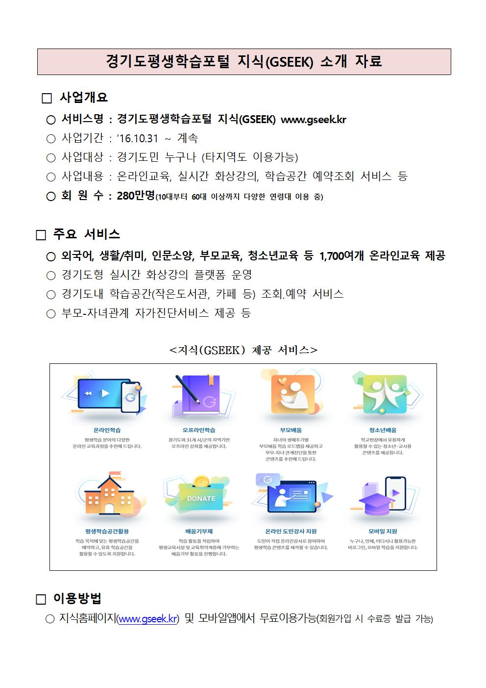

{kind=link}
{kind=link}
flowchart TB
setup["환경설정<br>MS(OpenAI), 구글(Bard)"] --> practice
subgraph practice["챗GPT 실습"]
direction LR
survey["자료조사<br>대한민국 영화통계"] --> writing["챗GPT 프롬프트 <br> 대박 영화 시놉시스 제작"]
writing --> image["Text-to-Image<br> 대박영화 포스터 제작"]
image --> excle["정형 데이터 <br> 엑셀"]
image --> autoGPT["작업 자동화 <br> AutoGPT"]
image --> reasoning["추론 <br> 수능문제풀이"]
end
practice --> workshop["챗GPT 출판<br>bitPublish, PDF"]
class practice nodeStyle
classDef nodeStyle fill:#93c47d,stroke:#000000,stroke-width:0.7px,font-weight:bold,font-size:14px;
1 강의노트
- 디지털 강의노트
- 정보보안을 위해서 강의 후 접속불가합니다.
2 사전준비
- 구글/마이크로소프트 회원가입을 통해 전자우편주소를 발급받는다.
- 구글/MS 전자우편주소를 사용해서 AI 서비스(챗GPT, 바드, MS 이미지 생성자 등)에 가입합니다.
3 (챗GPT) 디지털 글쓰기 1
4 챗GPT와 디지털 글쓰기
5 (이전 워크샵) 공개자료
경기도평생학습포털 지식(GSEEK) 지식홈페이지에 개설되는 “챗GPT 디지털 글쓰기” 교육과정을 통해 출판을 제외한 전체 과정을 학습했다.
- 워드 편집기(아래한글, 워드 등) 없이 다양한 형태 문서를 무료로 저작한다.
- 전세계 사람들과 동일한 방식으로 공유와 협업을 통해 디지털 저작물을 만든다.
- 유료 소프트웨어(오피스 구입), 무료 블로그 광고 없이도 디지털 저작물을 생산하고 저작권자는 본인으로 챗GPT 시대 디지털 글쓰기 주체로 자리매김한다.
, 
{kind=link}
학습자료 바로가기
각주
한국 R 사용자회 데이터 과학 글쓰기↩︎